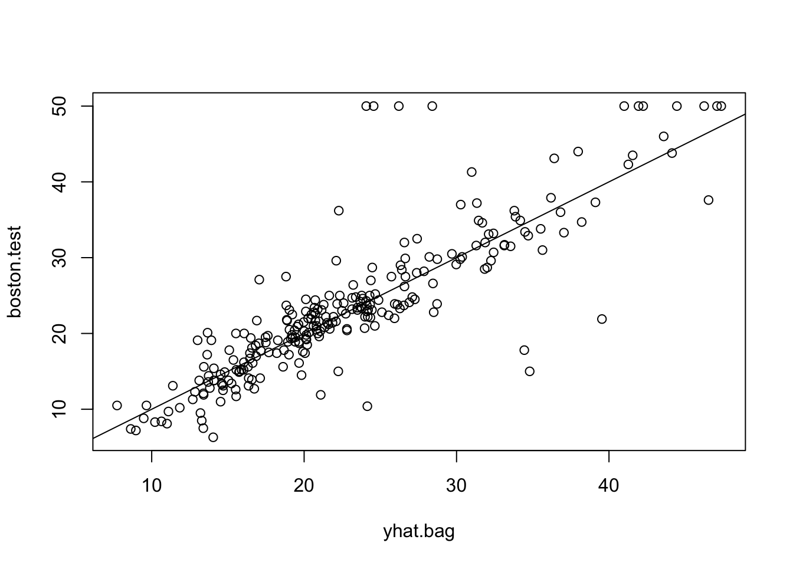

library(tree)
library(ISLR2)
attach(Carseats)
High = factor(ifelse(Sales <= 8, "No", "Yes"))Chapter 8: Tree-Based Methods
The tree-based methods are useful for interpretation but not competitive in prediction.
- bagging
- random forests
- boosting
- Bayesian additive regression trees
Regression Trees
- Divide the predictor space into J distinct and non-overlapping regions, \(R_1, R_2, ..., R_j\).
- Return the mean of the response values for the training observations in \(R_j\).;
The goal is to find boxes \(R_1, R_2, ..., R_j\) that minimize the following RSS.
\[ \sum_{j=1}^{J} \sum_{i \in R_j}(y_i - \hat{y}_{R_J})^2 \]
It is computationally infeasible to consider every possible partition. Therefore, we take a top-down, greedy algorithm, recursive binary splitting.
Given
Next, we split one of these two regions in the same way.
Tree Pruning
However, this method tends to cause overfitting. So we adopt tree pruning that incorporates splitting as long as the decrease in the RSS exceeds some threshold.
To avoid to discard a split that leas to a large reduction in RSS later on, grow a very large tree \(T_0\), and then prune it back in order. Here, since estimating the cross-validation error for every possible subtree would be too cumbersome, we select a small set of subtrees for consideration, called cost complexity pruning or weakest link pruning.
Find a subtree \(T \in T_0\) that minimizes the following function.
\(|T|\) is the number of terminal nodes of the tree T. \(\alpha |T|\) is a penalty for a larger tree.
We determine \(\alpha\) by cross-validation.
Classification Trees
We use one of the following three criteria instead of RSS for classification trees.
Classification error rate
The Gini index
\(\hat{P}_{mk}\) represents the proportion of training observations in the mth region that are from the kth class.
The small Gini index indicates a node contains predominantly observations from a single class.
Entropy
Here is the graph of \(-xlog(x)\).
The Gini index and entropy are quite similar numerically.
If prediction accuracy is the goal, the classification error rate is preferable.
Bagging
Bagging is the method with the following steps.
Bootstrap by taking repeated samples from the training dataset.
Train our method on the bth bootstrapped training set.
Average all the predictions.
Averaging a set of observations reduces variance. Given \(Z_1, …, Z_n\), each with variance \(\sigma^2\), the variance of \(\bar{Z}\) is \(\sigma^2/n\).
Out-of-Bag error estimation is a very straightforward way to estimate test error without the need to perform cross-validation.
Predict the response for Out-of-bag (OOB) observations not used to fit a given bagged tree.
Average the predictions and compute overall OOB MSE or classification error, which is valid estimates of the test error.
Bagging improves prediction accuracy at the expense of interpretability. Also, in bagging, many of the bagged trees tend to be highly correlated, leading a less reduction in variance than averaging many uncorrelated quantities.
Bagging can get caught in local optima.
Random Forests
Random forests forces each split to consider only a random subset of the predictors. (Typically, we choose \(m = \sqrt{p}\).) This make the average of the resulting trees less variable and more reliable.
Boosting (Gradient Boosting Machine: GBM)
In boosting, the trees are grown sequentially.
Set \(\hat{f}(x) = 0\) and \(r_i = y_i\).
Given the current model, fit a decision tree to the residuals from the model as \(\hat{f}^b(x)\) with d splits.
Add this new decision tree into the fitted function to update the residuals. \(\hat{f}(x) \leftarrow \hat{f}(x) + \lambda \hat{f}^b(x)\).
Update the residuals. \(r_i \leftarrow r_i - \lambda \hat{f}^b(x_i)\).
Output the boosted model. \(\hat{f}(x) = \sum_{b=1}^{B} \lambda \hat{f}^b(x)\).
Boosting can overfit if B is too large.
Typical values of \(\lambda\) is 0.01 or 0.001.
The number of splits often \(d = 1\).
Random Forest vs. Boosting
Random Forest has less number of tuning parameters. With proper tuning, boosting can perform better than random forest.
Bayesian Additive Regression Trees (BART)
Define three variables.
K: the number of trees
B: the number of iterations
L: the number of burn-in iterations
Here is the algorithm:
- \(\hat{f}_1^1 (x) = \hat{f}_2^1 (x) = ... = \hat{f}_K^1 (x) = \frac{1}{nK} \sum_{i=1}^{n} y_i\)
- \(\hat{f}^1(x) = \sum_{k=1}^{K} \hat{f}_k^1(x) = \frac{1}{n} \sum_{i=1}^{n} y_i\)
- For \(b = 2,…,B\):
For \(k = 1,2,…,K\):
For \(i = 1,…,n\), compute the current partial residual:
\(r_i = y_i - \sum_{k' < k} \hat{f}_{k'}^b (x_i) - \sum_{k' > k} \hat{f}_{k'}^{b-1}(x_i)\)
Fit a new tree, \(\hat{f}_k^b(x)\) to \(r_i\).
Compute \(\hat{f}^b(x) = \sum_{k=1}{K} \hat{f}_k^b (x)\)
- Compute the mean after L burn-in samples:
- \(\hat{f}(x) = \frac{1}{B-L} \sum_{b=L+1}{B} \hat{f}^b(x)\)
We typically throw away the first few models since they tend not to provide very good results.
We typically choose large values for B and K, and a moderate value for L: e.g., K=200, B=1000, L=100.
Lab
Fitting Classification Trees
Carseats = data.frame(Carseats, High)tree.carseats = tree(High ~ . - Sales, Carseats)summary(tree.carseats)
Classification tree:
tree(formula = High ~ . - Sales, data = Carseats)
Variables actually used in tree construction:
[1] "ShelveLoc" "Price" "Income" "CompPrice" "Population"
[6] "Advertising" "Age" "US"
Number of terminal nodes: 27
Residual mean deviance: 0.4575 = 170.7 / 373
Misclassification error rate: 0.09 = 36 / 400 plot(tree.carseats)
text(tree.carseats, pretty=0)tree.carseatsnode), split, n, deviance, yval, (yprob)
* denotes terminal node
1) root 400 541.500 No ( 0.59000 0.41000 )
2) ShelveLoc: Bad,Medium 315 390.600 No ( 0.68889 0.31111 )
4) Price < 92.5 46 56.530 Yes ( 0.30435 0.69565 )
8) Income < 57 10 12.220 No ( 0.70000 0.30000 )
16) CompPrice < 110.5 5 0.000 No ( 1.00000 0.00000 ) *
17) CompPrice > 110.5 5 6.730 Yes ( 0.40000 0.60000 ) *
9) Income > 57 36 35.470 Yes ( 0.19444 0.80556 )
18) Population < 207.5 16 21.170 Yes ( 0.37500 0.62500 ) *
19) Population > 207.5 20 7.941 Yes ( 0.05000 0.95000 ) *
5) Price > 92.5 269 299.800 No ( 0.75465 0.24535 )
10) Advertising < 13.5 224 213.200 No ( 0.81696 0.18304 )
20) CompPrice < 124.5 96 44.890 No ( 0.93750 0.06250 )
40) Price < 106.5 38 33.150 No ( 0.84211 0.15789 )
80) Population < 177 12 16.300 No ( 0.58333 0.41667 )
160) Income < 60.5 6 0.000 No ( 1.00000 0.00000 ) *
161) Income > 60.5 6 5.407 Yes ( 0.16667 0.83333 ) *
81) Population > 177 26 8.477 No ( 0.96154 0.03846 ) *
41) Price > 106.5 58 0.000 No ( 1.00000 0.00000 ) *
21) CompPrice > 124.5 128 150.200 No ( 0.72656 0.27344 )
42) Price < 122.5 51 70.680 Yes ( 0.49020 0.50980 )
84) ShelveLoc: Bad 11 6.702 No ( 0.90909 0.09091 ) *
85) ShelveLoc: Medium 40 52.930 Yes ( 0.37500 0.62500 )
170) Price < 109.5 16 7.481 Yes ( 0.06250 0.93750 ) *
171) Price > 109.5 24 32.600 No ( 0.58333 0.41667 )
342) Age < 49.5 13 16.050 Yes ( 0.30769 0.69231 ) *
343) Age > 49.5 11 6.702 No ( 0.90909 0.09091 ) *
43) Price > 122.5 77 55.540 No ( 0.88312 0.11688 )
86) CompPrice < 147.5 58 17.400 No ( 0.96552 0.03448 ) *
87) CompPrice > 147.5 19 25.010 No ( 0.63158 0.36842 )
174) Price < 147 12 16.300 Yes ( 0.41667 0.58333 )
348) CompPrice < 152.5 7 5.742 Yes ( 0.14286 0.85714 ) *
349) CompPrice > 152.5 5 5.004 No ( 0.80000 0.20000 ) *
175) Price > 147 7 0.000 No ( 1.00000 0.00000 ) *
11) Advertising > 13.5 45 61.830 Yes ( 0.44444 0.55556 )
22) Age < 54.5 25 25.020 Yes ( 0.20000 0.80000 )
44) CompPrice < 130.5 14 18.250 Yes ( 0.35714 0.64286 )
88) Income < 100 9 12.370 No ( 0.55556 0.44444 ) *
89) Income > 100 5 0.000 Yes ( 0.00000 1.00000 ) *
45) CompPrice > 130.5 11 0.000 Yes ( 0.00000 1.00000 ) *
23) Age > 54.5 20 22.490 No ( 0.75000 0.25000 )
46) CompPrice < 122.5 10 0.000 No ( 1.00000 0.00000 ) *
47) CompPrice > 122.5 10 13.860 No ( 0.50000 0.50000 )
94) Price < 125 5 0.000 Yes ( 0.00000 1.00000 ) *
95) Price > 125 5 0.000 No ( 1.00000 0.00000 ) *
3) ShelveLoc: Good 85 90.330 Yes ( 0.22353 0.77647 )
6) Price < 135 68 49.260 Yes ( 0.11765 0.88235 )
12) US: No 17 22.070 Yes ( 0.35294 0.64706 )
24) Price < 109 8 0.000 Yes ( 0.00000 1.00000 ) *
25) Price > 109 9 11.460 No ( 0.66667 0.33333 ) *
13) US: Yes 51 16.880 Yes ( 0.03922 0.96078 ) *
7) Price > 135 17 22.070 No ( 0.64706 0.35294 )
14) Income < 46 6 0.000 No ( 1.00000 0.00000 ) *
15) Income > 46 11 15.160 Yes ( 0.45455 0.54545 ) *set.seed(2)
train = sample(1:nrow(Carseats), 200)
Carseats.test = Carseats[-train, ]
High.test = High[-train]
tree.carseats = tree(High ~ . - Sales, Carseats, subset = train)
tree.pred = predict(tree.carseats, Carseats.test, type = "class")
table(tree.pred, High.test) High.test
tree.pred No Yes
No 104 33
Yes 13 50(104 + 50) / 200[1] 0.77The function cv.tree() performs cross-validation to determine the optimal level of tree complexity. FUN=prune.misclass indicates that we want the classification error rate to guide the cross-validation and pruning process. (The default is deviance.)
set.seed(7)
cv.carseats = cv.tree(tree.carseats, FUN = prune.misclass)
cv.carseats$size
[1] 21 19 14 9 8 5 3 2 1
$dev
[1] 75 75 75 74 82 83 83 85 82
$k
[1] -Inf 0.0 1.0 1.4 2.0 3.0 4.0 9.0 18.0
$method
[1] "misclass"
attr(,"class")
[1] "prune" "tree.sequence"size: the number of terminal nodes of each tree
dev: the error rate (the number of cross-validation error)
k: the value of the cost-complexity parameter (\(\alpha\))
par(mfrow = c(1,2))
plot(cv.carseats$size, cv.carseats$dev, type = "b")
plot(cv.carseats$k, cv.carseats$dev, type = "b")The size of 9 has the lowest dev.
prune.carseats = prune.misclass(tree.carseats, best = 9) # obtain the nine-node tree
plot(prune.carseats)
text(prune.carseats, pretty = 0)tree.pred = predict(prune.carseats, Carseats.test, type = "class")
table(tree.pred, High.test) High.test
tree.pred No Yes
No 97 25
Yes 20 58(97 + 58) / 200[1] 0.775The pruned tree produced a more interpretable tree and also slightly improved classification accuracy.
A larger pruned tree has lower classification accuracy:
prune.carseats = prune.misclass(tree.carseats, best = 14) # obtain the 14-node tree
plot(prune.carseats)
text(prune.carseats, pretty = 0)tree.pred = predict(prune.carseats, Carseats.test, type = "class")
table(tree.pred, High.test) High.test
tree.pred No Yes
No 102 31
Yes 15 52(102 + 52) / 200[1] 0.77Fitting Regression Trees
set.seed (1)
train <- sample (1: nrow(Boston), nrow(Boston) / 2)
tree.boston <- tree(medv ~ ., Boston , subset = train)
summary(tree.boston)
Regression tree:
tree(formula = medv ~ ., data = Boston, subset = train)
Variables actually used in tree construction:
[1] "rm" "lstat" "crim" "age"
Number of terminal nodes: 7
Residual mean deviance: 10.38 = 2555 / 246
Distribution of residuals:
Min. 1st Qu. Median Mean 3rd Qu. Max.
-10.1800 -1.7770 -0.1775 0.0000 1.9230 16.5800 plot(tree.boston)
text(tree.boston , pretty = 0)cv.boston <- cv.tree(tree.boston)
plot(cv.boston$size , cv.boston$dev, type = "b")prune.boston <- prune.tree(tree.boston , best = 5)
plot(prune.boston)
text(prune.boston , pretty = 0)
yhat <- predict(tree.boston , newdata = Boston[-train , ])
boston.test <- Boston[-train, "medv"]
plot(yhat , boston.test)
abline (0, 1)mean (( yhat - boston.test)^2)[1] 35.28688rpart
library(rpart)
library(rpart.plot)
set.seed(1234)
tr1 = rpart(medv ~ ., data = Boston)
par(mfrow=c(1,2))
plot(tr1)
rpart.plot(tr1)cross-validation for pruning.
CP: scaled \(\alpha\).
Instead of \(RSS(T) + \alpha |T|\), rpart uses \(\frac{RSS(T)}{RSS(root)} + CP \cdot |T|\).
printcp(tr1)
Regression tree:
rpart(formula = medv ~ ., data = Boston)
Variables actually used in tree construction:
[1] crim dis lstat rm
Root node error: 42716/506 = 84.42
n= 506
CP nsplit rel error xerror xstd
1 0.452744 0 1.00000 1.00324 0.082971
2 0.171172 1 0.54726 0.64125 0.057921
3 0.071658 2 0.37608 0.43009 0.047418
4 0.036164 3 0.30443 0.33278 0.041968
5 0.033369 4 0.26826 0.32456 0.042045
6 0.026613 5 0.23489 0.31425 0.041927
7 0.015851 6 0.20828 0.28420 0.039942
8 0.010000 7 0.19243 0.27750 0.040652tr1$cptable CP nsplit rel error xerror xstd
1 0.45274420 0 1.0000000 1.0032418 0.08297088
2 0.17117244 1 0.5472558 0.6412460 0.05792114
3 0.07165784 2 0.3760834 0.4300911 0.04741826
4 0.03616428 3 0.3044255 0.3327752 0.04196756
5 0.03336923 4 0.2682612 0.3245644 0.04204536
6 0.02661300 5 0.2348920 0.3142473 0.04192687
7 0.01585116 6 0.2082790 0.2841993 0.03994168
8 0.01000000 7 0.1924279 0.2774985 0.04065244cbind(tr1$cptable[, 1], c(-diff(tr1$cptable[, 3]), 0)) [,1] [,2]
1 0.45274420 0.45274420
2 0.17117244 0.17117244
3 0.07165784 0.07165784
4 0.03616428 0.03616428
5 0.03336923 0.03336923
6 0.02661300 0.02661300
7 0.01585116 0.01585116
8 0.01000000 0.00000000prune(tr1, cp=0.3) # only 1 splitn= 506
node), split, n, deviance, yval
* denotes terminal node
1) root 506 42716.300 22.53281
2) rm< 6.941 430 17317.320 19.93372 *
3) rm>=6.941 76 6059.419 37.23816 *prune(tr1, cp=0.1) # 2 splitsn= 506
node), split, n, deviance, yval
* denotes terminal node
1) root 506 42716.300 22.53281
2) rm< 6.941 430 17317.320 19.93372
4) lstat>=14.4 175 3373.251 14.95600 *
5) lstat< 14.4 255 6632.217 23.34980 *
3) rm>=6.941 76 6059.419 37.23816 *plotcp(tr1)Bagging and Random Forests
library(randomForest)
set.seed (1)
bag.boston <- randomForest(medv ~ ., data = Boston, subset = train , mtry = 12, importance = TRUE)
bag.boston
Call:
randomForest(formula = medv ~ ., data = Boston, mtry = 12, importance = TRUE, subset = train)
Type of random forest: regression
Number of trees: 500
No. of variables tried at each split: 12
Mean of squared residuals: 11.40162
% Var explained: 85.17mtry indicates the number of predictors to be considered for each split.
yhat.bag <- predict(bag.boston , newdata = Boston[-train , ])
plot(yhat.bag , boston.test)
abline (0, 1)
mean (( yhat.bag - boston.test)^2)[1] 23.41916bag.boston <- randomForest(medv ~ ., data = Boston ,
subset = train , mtry = 12, ntree = 25)
yhat.bag <- predict(bag.boston , newdata = Boston[-train , ])
mean (( yhat.bag - boston.test)^2)[1] 25.75055ntree indicates the number of trees.
To conduct random forest, we set mtry less than the number of variables.
set.seed (1)
rf.boston <- randomForest(medv ~ ., data = Boston,
subset = train , mtry = 6, importance = TRUE)
yhat.rf <- predict(rf.boston, newdata = Boston[-train , ])
mean (( yhat.rf - boston.test)^2)[1] 20.06644The prediction and error rate returned by randomForest are calculated based on OOB.
importance(rf.boston) %IncMSE IncNodePurity
crim 19.435587 1070.42307
zn 3.091630 82.19257
indus 6.140529 590.09536
chas 1.370310 36.70356
nox 13.263466 859.97091
rm 35.094741 8270.33906
age 15.144821 634.31220
dis 9.163776 684.87953
rad 4.793720 83.18719
tax 4.410714 292.20949
ptratio 8.612780 902.20190
lstat 28.725343 5813.04833varImpPlot(rf.boston)%IncMSE indicates the increase in MSE for regression / error rate for classification, when a given variable is not available (or permuted). In this case, lstat and rm are by far the two more important variables.
Boosting
library(gbm)
set.seed (1)
boost.boston <- gbm(medv ~ ., data = Boston[train , ],
distribution = "gaussian", n.trees = 5000,
interaction.depth = 4)We set distribution as "gaussian" for a regression problem and "bernoulli" for a binary classification problem.
interaction.depth limits the depth of each tree.
summary(boost.boston) var rel.inf
rm rm 44.48249588
lstat lstat 32.70281223
crim crim 4.85109954
dis dis 4.48693083
nox nox 3.75222394
age age 3.19769210
ptratio ptratio 2.81354826
tax tax 1.54417603
indus indus 1.03384666
rad rad 0.87625748
zn zn 0.16220479
chas chas 0.09671228Below show partial dependence plots, illustrating the marginal effect of the selected variables on the response after integrating out the other variables.
par(mfrow = c(1,2))
plot(boost.boston , i = "rm")plot(boost.boston , i = "lstat")yhat.boost <- predict(boost.boston,
newdata = Boston[-train , ], n.trees = 5000)
mean (( yhat.boost - boston.test)^2)[1] 18.39057boost.boston <- gbm(medv ~ ., data = Boston[train , ],
distribution = "gaussian", n.trees = 5000,
interaction.depth = 4, shrinkage = 0.2, verbose = F)
yhat.boost <- predict(boost.boston ,
newdata = Boston[-train , ], n.trees = 5000)
mean (( yhat.boost - boston.test)^2)[1] 16.54778shrinkage is the value of the shrinkage parameter \(\lambda\) with 0.001 as default. In this case, \(\lambda=0.2\) produces a lower test MSE.
gbm.perf(boost.boston)OOB generally underestimates the optimal number of iterations although predictive performance is reasonably competitive. Using cv_folds>1 when calling gbm usually results in improved predictive performance.[1] 100
attr(,"smoother")
Call:
loess(formula = object$oobag.improve ~ x, enp.target = min(max(4,
length(x)/10), 50))
Number of Observations: 5000
Equivalent Number of Parameters: 39.99
Residual Standard Error: 0.3387 Bayesian Additive Regression Trees
library(BART)
x <- Boston[, 1:12]
y <- Boston[, "medv"]
xtrain <- x[train, ]
ytrain <- y[train]
xtest <- x[-train, ]
ytest <- y[-train]
set.seed (1)
bartfit <- gbart(xtrain , ytrain , x.test = xtest)*****Calling gbart: type=1
*****Data:
data:n,p,np: 253, 12, 253
y1,yn: 0.213439, -5.486561
x1,x[n*p]: 0.109590, 20.080000
xp1,xp[np*p]: 0.027310, 7.880000
*****Number of Trees: 200
*****Number of Cut Points: 100 ... 100
*****burn,nd,thin: 100,1000,1
*****Prior:beta,alpha,tau,nu,lambda,offset: 2,0.95,0.795495,3,3.71636,21.7866
*****sigma: 4.367914
*****w (weights): 1.000000 ... 1.000000
*****Dirichlet:sparse,theta,omega,a,b,rho,augment: 0,0,1,0.5,1,12,0
*****printevery: 100
MCMC
done 0 (out of 1100)
done 100 (out of 1100)
done 200 (out of 1100)
done 300 (out of 1100)
done 400 (out of 1100)
done 500 (out of 1100)
done 600 (out of 1100)
done 700 (out of 1100)
done 800 (out of 1100)
done 900 (out of 1100)
done 1000 (out of 1100)
time: 3s
trcnt,tecnt: 1000,1000yhat.bart <- bartfit$yhat.test.mean
mean (( ytest - yhat.bart)^2)[1] 15.94718We can check how many times each variable appeared in the collection of trees.
ord <- order(bartfit$varcount.mean , decreasing = T)
bartfit$varcount.mean[ord] nox lstat tax rad rm indus chas ptratio age zn
22.952 21.329 21.250 20.781 19.890 19.825 19.051 18.976 18.274 15.952
dis crim
14.457 11.007